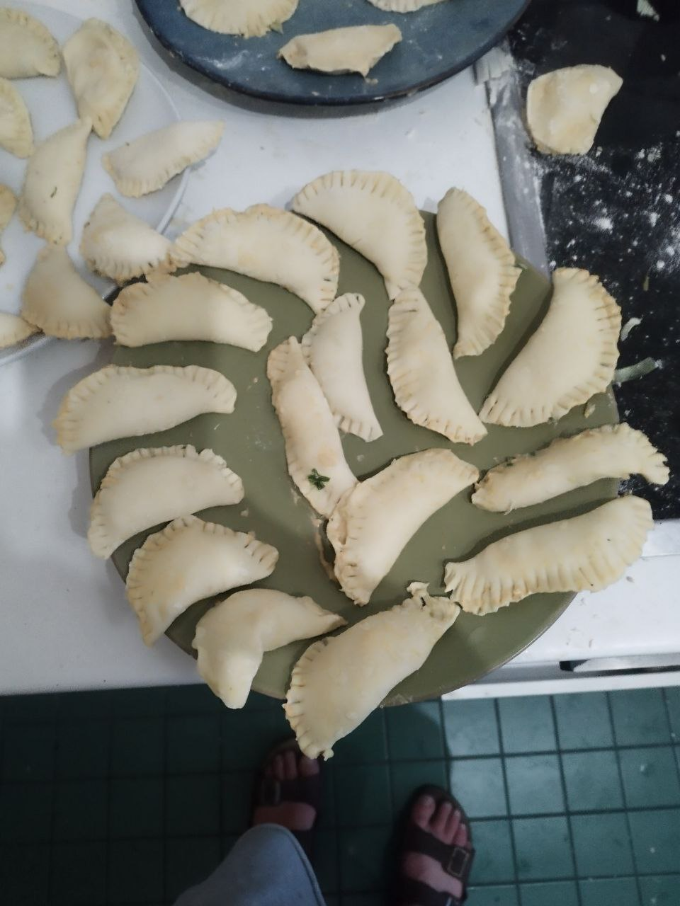
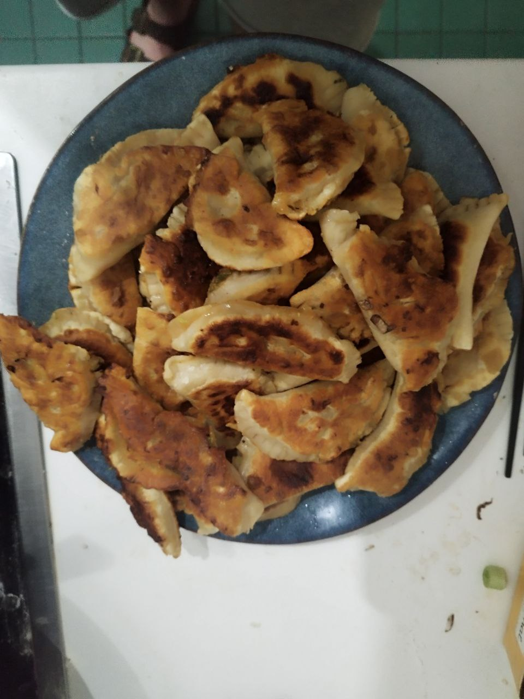

All Recipes
Tags
Gyoza
Ingredients
50
Dumpling Wrappers
(circle)
250g minced meat
500g cabbage
5-6 spring onions
4 cloves garlic
1 Tbsp sesame oil
1 Tbsp soy sauce
1 Tbsp salt
1 Tbsp white pepper
vegetable oil or water
Steps
Mince garlic, slice spring onions and cabbage
Combine all ingredients except wrappers and mix well
Divide filling among the wrappers, leaving 0.5-1cm free at the sides
Fold wrappers in half and press edges together, forming half-circle shaped pockets
Either pan-fry or steam the gyoza for 3-5min (turning after half the time when frying)
Notes
Replace meat with seasoned tofu for a vegan variant
Tags
Japanese

